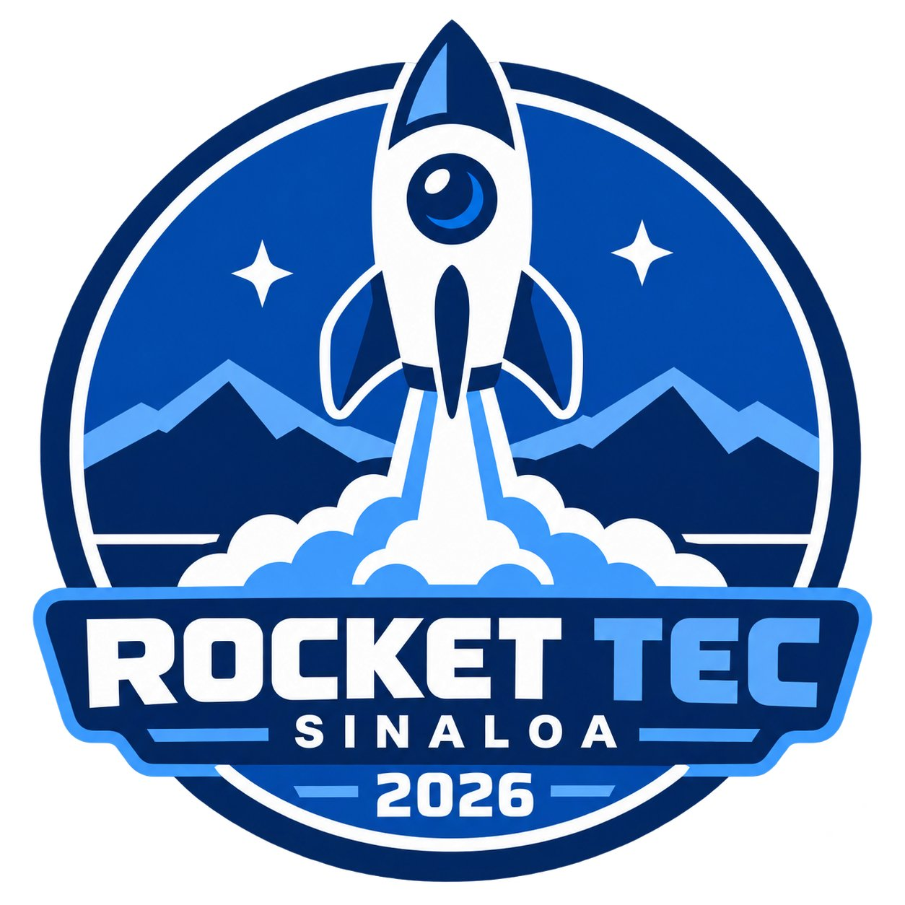

ROCKET TEC / BITÁCORA DE LANZAMIENTO
REGISTRO DE PRUEBAALFA-2 / HAIL MARY
Grupo 502 · Equipo 03 · Campus Sinaloa
Ejemplo para probar la publicación de bitácoras. Se conservan los datos del paquete recibido. Este registro de prueba no acredita un lanzamiento real ni se presenta como resultado validado.
01 / VISTA DEL REGISTRO
Lo que reportó el equipo
Encendió y salió de la base. Se desvió lateralmente. Recuperado completo.
02 / REVISIÓN DEL EJEMPLO
Observaciones de la prueba
- La hora declarada es 21:50 del 11 de noviembre. ALFA-2 estaba programada de 7:00 a 8:00 a. m., hora de Sinaloa.
- Se declaró lectura del sensor, con altura de 0 m y modelo «1». Son valores pendientes de confirmar.
- La imagen adjunta es el logo de Rocket Tec; no es una fotografía grupal.
03 / DATOS DE LA ENTREGA
Bitácora completa
- Grupo
- 502
- Equipo
- 03
- Fecha del lanzamiento
- 2026-11-11
- Hora del lanzamiento (Sinaloa)
- 21:50
- Versión del diseño
- PLA
- Masa lista para despegar (g)
- 65
- Modelo del motor
- Estes A10-3T
- Motores restantes después del lanzamiento
- 3
- Encendido y salida de la base
- Encendió y salió de la base
- Recuperación
- Recuperado completo
- Trayectoria observada
- Se desvió lateralmente
- Despliegue del paracaídas
- Se desplegó parcialmente
- Lectura válida del sensor
- Sí
- Altura máxima medida (m)
- 0
- Modelo del sensor
- 1
- Nombre del equipo
- HAIL MARY
- Autorización de la fotografía
- Confirmada por quien elaboró la bitácora
Identificación del archivo recibido
Folio: ALFA-2-G502-E03-R02f7179b-9be0-4896-9d7d-ba7760ecab84
ID: 02f7179b-9be0-4896-9d7d-ba7760ecab84
Elaboración declarada por el dispositivo: 2026-11-13T04:50:08.797Z (UTC). No es un sello de recepción ni la hora del lanzamiento.
04 / IMAGEN ADJUNTA
Imagen de prueba

Se conserva el nombre original del archivo: foto-grupal.jpg.
Consultar los archivos
El ZIP conserva la entrega original. Puedes descargarlo y abrirlo en el visor del profesor.